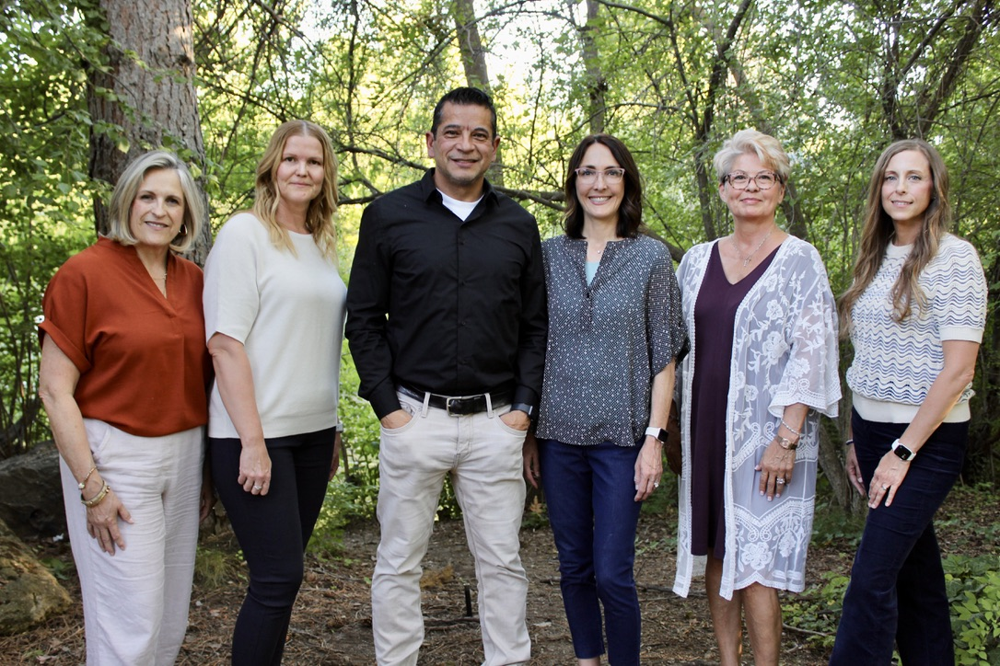

Our therapists
We're a small practice on purpose. You'll get to know your therapist, and they'll get to know you. Each of us has a different background and style; all of us are committed to careful, current, respectful care. Read through the bios, pick the person who sounds right, and request an appointment with them directly. Not sure? Tell us a little about what's going on and we'll match you.
Jump to: Joe Jennifer Charlene Leann Katie Kaisa


Joe Arzola, LCSW
Psychotherapist and practice administrator
You already have strengths that got you this far. Joe helps you find them, name them, and use them to get through what's in front of you now.
Joe has spent more than 21 years in mental health, and before that served 12 years in the military. He has sat with people from every walk of life, and what he loves most is getting to know someone and having a real conversation with them.
He works from a strength-based team approach: counseling is a partnership, and you take the lead in your own treatment, because that is what makes change last. He'll tell you plainly that investing in counseling is investing in yourself. Our bodies need attention, and so do our minds and emotions.
- Works with
- Adults, couples, and families. Depression, anxiety, trauma, addictions, eating disorders, marital and premarital counseling, traumatic brain injury, and developmental delays.
- Approach
- Strength-based, collaborative, direct. You set the goals; Joe helps you reach them.
- Good to know
- Accepts most insurance plans, including Medicaid. Sliding fee scale for those who qualify.

Jennifer Arzola, LPC
Psychotherapist
If your relationships have felt inconsistent or painful, you may be living in survival mode without realizing it. Jennifer helps you find your way back to security.
Jennifer's work is grounded in a simple belief: we're wired for connection, and our deepest sense of safety and belonging comes from our relationships.
In sessions she works through an attachment lens and draws on emotionally focused therapy, slowing down to notice the feelings underneath the surface and helping you understand and express them in new ways. Therapy with Jennifer is collaborative. You don't have to figure things out alone. If your faith matters to you, she'll thoughtfully include it; if not, your autonomy is always respected.
- Works with
- Adults 18 and older. Anxiety, depression, trauma, grief and loss, life transitions, relationship struggles, and identity concerns.
- Approach
- Attachment-based and emotionally focused. Warm, steady, and paced to you.
- Good to know
- Accepts most insurance plans, including Medicaid. Faith-integrated counseling available on request.

Charlene Holloway, LMSW
Psychotherapist
Trauma doesn't have to be the thing that runs your life. Charlene has helped people of every age heal from it for more than 16 years.
Charlene believes every person has an inherent capacity for healing that can be nurtured through empathetic guidance and personalized support. She creates a safe, non-judgmental space where trust is built at your pace, and you share what you want, when you're ready.
She has extensive experience helping children, teens, adults, and couples in crisis, including survivors of sexual abuse and domestic violence. Her toolkit is wide: EMDR, Cognitive Behavioral Therapy, Dialectical Behavior Therapy, solution-focused and family systems work, Polyvagal Theory, and sand, art, and play therapy for younger clients.
- Works with
- Children, teens, adults, and couples. PTSD and single or complex trauma, sexual abuse, domestic violence, depression, anxiety, ODD, and relationship issues.
- Approach
- Trauma-informed. Trained in EMDR and play therapy.
- Good to know
- Free 15-minute phone consultation. In person, or by Zoom or phone. Monday to Friday, 9am to 6:30pm.

Leann Vaterlaus, LMSW
Psychotherapist
When the same problem keeps coming back no matter how hard you work on it, it's usually held in the body as much as the mind. Leann treats both.
Leann is a wife, mother, and grandmother whose own lifetime of good and hard experiences lets her connect with a wide range of people and challenges. She's warm and caring in the room, and direct enough to get to the heart of what's going on. She thinks of counseling as an adjustment in our thinking and functioning that all of us need from time to time.
She pairs "top-down" approaches like CBT, DBT, and mindfulness with "body-up" approaches like Polyvagal Theory, Internal Family Systems, somatic work, EMDR, and Accelerated Resolution Therapy, a fast-acting method for trauma that keeps resurfacing. Leann is certified in Accelerated Resolution Therapy and is a Certified Clinical Trauma Professional, a Certified Mood Disorders Professional, and an ADHD Clinical Services Provider.
- Works with
- Teens and adults. Trauma and PTSD, anxiety, depression, ADHD, self-harm and suicidal thoughts, grief and loss, life transitions, parenting and family conflict, relationship challenges, chronic pain and illness, and pregnancy and postpartum.
- Approach
- Trauma-focused, mind and body. Comfortable including spirituality and faith, including the LDS faith, when it matters to you.
- Good to know
- Free 15-minute phone consultation. Monday, Tuesday, and Thursday, with some evening appointments.

Katie Aston, LMSW
Psychotherapist and CBRS provider
Kids don't always have the words for what they feel. Katie helps them say it through play, and helps you bring more calm and joy back to your home.
Katie earned her Master of Social Work at Boise State University and has extensive experience working with children and their parents. Her approach is warm, compassionate, and relationship-based: kids do their best work when they feel safe with the person across from them.
With younger clients she uses play therapy, which lets children express emotions, work through experiences, and build healthy coping skills in ways that are natural, engaging, and right for their age. She's passionate about helping kids express and regulate emotions, grow their confidence, and build social and communication skills, while supporting parents in bringing more joy and better day-to-day functioning to the whole family.
- Works with
- Children and teens ages 3 to 18, and parents. Emotional regulation, confidence, social and communication skills, and family functioning.
- Approach
- Play therapy. Trained in EMDR and play therapy.
- Good to know
- Free 15-minute phone consultation. Community-Based Rehabilitation Services (CBRS) for clients with Medicaid. Sliding fee for families who qualify.

Kaisa
Counseling intern
Want to start therapy sooner, or at a lower cost, without giving up quality? Working with Kaisa is one of the best ways to do it.
Kaisa is completing a graduate degree in counseling and sees clients at Treasure Valley Mental Health under the close supervision of our licensed clinicians. Working with an intern means you get a therapist who is fully engaged, up to date on current training, and backed by an experienced supervisor who reviews their work.
Intern sessions are a good fit if you're looking for a lower-cost way to start therapy, or if you'd like to be seen sooner. Ask us about availability when you reach out.
- Works with
- Adults and teens. Anxiety, depression, stress, life transitions, and relationship concerns.
- Approach
- Collaborative and supervised. Every session is backed by a licensed clinician.
- Good to know
- Reduced-rate sessions. Usually the shortest wait for a first appointment.
Looking for a lower-cost option?
We offer reduced-rate sessions and a sliding fee scale so cost doesn't keep you from getting help. See fees and insurance, or just ask when you reach out.
Ready when you are.
Reaching out is the hardest step. The rest we'll figure out together.
Request an appointment